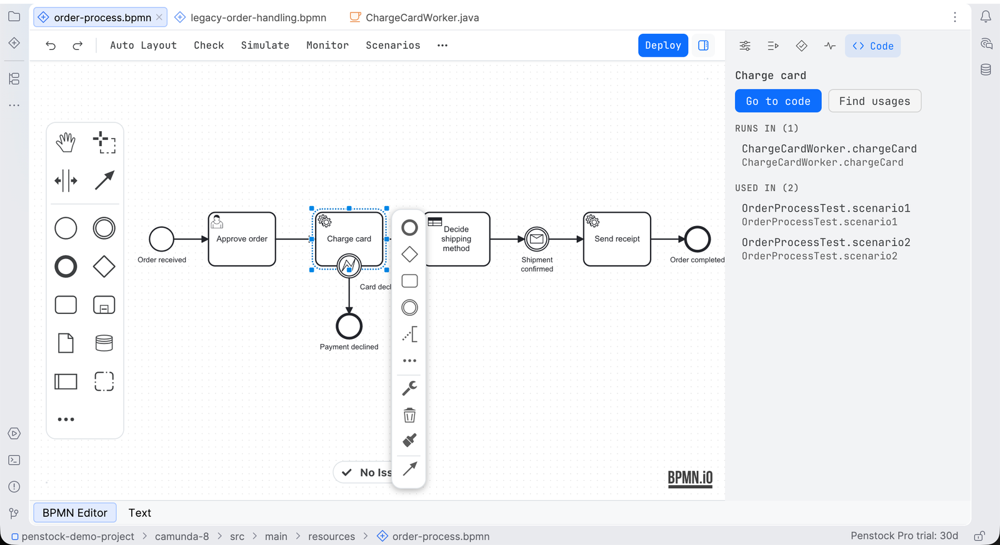

Guide / Running
Code links
Code links tie your diagrams to the code that runs them, so you can jump between a task and its worker, and find out when they disagree.
What it is
A diagram says "this task needs the job type charge-card". Your code has a worker for charge-card. Code links know both, and connect them. They read Java, Kotlin, Groovy, Scala, JavaScript, TypeScript, Python, Go and C# by reading the text, so a worker in another language or another repository still counts.
Free and Pro
Going from a Camunda 7 task to its Java class or Spring bean is free. See Editing a diagram. Everything below needs Pro, and Team in a pipeline. Without Pro, Penstock keeps only class and bean links, and an action that needs the rest says what it gives and offers to buy or sign in.
The Code tab
The Code tab of the sidebar shows the code behind the selected step: the workers, classes, beans, tests and usages that name it, with Go to code, Find usages, Run tests and Debug tests on the head of the tab. A group with more than a handful of entries opens in a view of its own, with a ‹ back. With nothing selected the tab says Select a task to see its code, and a step nothing in the project runs, tests or uses is said plainly rather than left as an empty tab.

Where you use the links
JetBrains
All of it works in the IDE, in Java and Kotlin sources: click through, completion, gutter icons, Code Vision, Find Usages and the debugger's position on the diagram. Ctrl/Cmd+click opens a diagram element named in a string or a comment, and the Run tests and Debug tests actions on the Code tab run the test cases that use the selected step. See Code links in the IDE.
Command line
Only the check against the code: penstock code. The MCP tool check_code_links does the same for an AI assistant.
VS Code
In VS Code, with Pro, they work in the nine languages the command line reads. A code lens above a worker, delegate or subscription names the diagram and element that use it. Go to Definition and Find All References go between code and diagrams, the Code view in the Explorer lists processes, workers, variables, messages and errors, and the Problems view carries what penstock code reports. Completion of ids, gutter icons, the debugger's position on the diagram and running the tests from the diagram are not in VS Code. See Code links in VS Code.
What is linked
- From code to diagram. A process id, element id, job type, topic, message name or decision id in a Java or Kotlin string is a link to the diagram element. An id that no diagram has is marked. A
@JobWorkerwithout atypetakes the method name as the job type. That is marked, because renaming the method stops the worker. - An element named in any file.
order.bpmn#ServiceTask_charge, a path to the file, or a process id and the element's id after#, is a link from any language. Completion after#offers the ids of the diagram that is named, and an id no diagram in the project has is marked with a quick fix offering the near ones. - From diagram to code. Hover an element to see what runs it, the tests that name it, how often the rest of the code does, the variables it sets and reads, and whether tests reach it. The element's menu goes to the implementation, and finds the code that names the element, its process, the job type, class or bean it runs, its message or its decision: the worker, the tests, and the code that starts it.
- Variables. Penstock reads where each process variable is set and read: input and output mappings, conditions, FEEL and JUEL expressions, result variables, form fields, message correlation keys, multi-instance collections, call activity in and out. A variable that is read but never set is marked. When a name is a letter away from a known one, Penstock asks set as 'approved'?. In code,
getVariable,setVariable,variable,@Variableand the test assertions use the names the diagrams use. - Variables across the code boundary. The variables the code of a step reads and writes are part of the analysis of that step. Penstock reads
@JobWorker(fetchVariables),@Variable,@VariablesAsTypeclasses with their fields and@JsonPropertynames,job.getVariable, what a worker returns,execution.getVariableandsetVariable, and the variables of an external task handler, and the Node, Python, Go and C# clients beside them. So the findings you have for the diagram reach into the code: a name a worker reads that no step before it sets, and a typo near one that is. - Error codes. The code in
new BpmnError("..."),handleBpmnError(task, "..."), an error command'serrorCode("...")orCamundaError.bpmnError("...")is linked to the error event that catches it. A code no error event catches is marked, and so is an error event nothing throws. - Tests and coverage. The link goes both ways between a process and the tests that name it. See Process tests and coverage.
Check the diagram against the code
Penstock compares every diagram with the code and reports what does not fit. In the editor, the Problems tab has a Code group, and the check card lists the same findings.
Check diagrams against code in your tool
JetBrains
The check card has a Code section. For the whole project, right-click in the Penstock tool window and choose Run Penstock | Code. Each finding has a file and line, which the IDE opens at the line.
Command line
$ penstock code .
3 source file(s), 1 diagram(s), 4 reference(s) from diagrams to code
Every task the diagrams hand to code has something in the code to run it.Each finding has a file and a line. --format json is for a tool. See Every command.
VS Code
The check card has a Code section. In VS Code the same findings are in the Problems view for the whole workspace, under the source penstock, once you have Pro. Each one has a file and a line, and a click opens it. For a pipeline, run penstock code. See Code links in VS Code.
| Finding | Rule |
|---|---|
| Nothing in the code runs a step | code/missing-implementation |
| No worker handles a job type | code/no-worker |
| No external task worker subscribes to a topic | code/no-topic-worker |
| A class named in the diagram is not in the project | code/class-missing |
| No Spring bean has the name a diagram uses | code/bean-missing |
| A call activity calls a process no diagram defines | code/unknown-process |
| A business rule task calls a decision no file defines | code/unknown-decision |
| A user task shows a form no file defines | code/unknown-form |
| A worker for a job type no diagram uses | code/unused-worker |
| A variable is read, but only a similar one is set | code/variable-typo |
| Nothing throws the error a step catches | code/never-thrown |
Names are matched exactly. A name that differs only by case, such as charge-Card against charge-card, is pointed out, because Camunda matches names exactly. Connector job types such as io.camunda:http-json:1 and job types set by an expression are understood and left alone. Job types of Camunda 8 execution and task listeners count as workers. The full list is in Every rule.
Where a step and its code do not agree
These findings are reported on the step. The three about variables, the first three in the table, are marked in the code too, on the line that reads or writes the variable.
| Finding | Id |
|---|---|
| A worker reads a variable it does not fetch, so it is null at runtime | code/worker-fetch |
| A worker sets a variable that no step after it reads | code/writer-unread |
| A parallel multi-instance step collects results with no output element, so every instance overwrites the others | code/lost-update |
| A worker reads a variable that no step before it sets | code/late-read |
| A job type, topic, class or bean is one letter off the one in the code, or differs from it only in case | code/near-name |
| A mapping line reads a value that an earlier line was meant to set, which the engine gives as null (camunda#11789) | code/mapping-order |
| A job worker takes its job type from its method name, so a rename breaks the diagram silently | code/implicit-job-type |
Rename a name the diagram and the code share
A job type, a topic, a Camunda 7 bean or class, and a process, decision or form id are written in the diagram and in the code. Renaming one from either side opens a preview that lists every diagram, decision, form and source file that writes the name, in the project and in a linked repository, and one command writes them all. Going the other way, changing such a value in the properties panel offers to rename the places that still hold the old one. It never edits code on its own. A process id, a job type and a message name are what a deployed engine knows, so the preview says that instances already running keep the old name, and offers to ask the engine, only when you ask, how many are active. Variables are left out, because the analysis reports the uses it saw, not that it saw them all. See Rename.
Element templates from worker code
A job worker in your code can become an element template. Create Element Template, on a @JobWorker method, a newWorker().jobType(...) registration or a Camunda 7 external task subscription, writes the template of that job type or topic into .camunda/element-templates, with one field for each variable the worker reads, typed by its Java type, an enum as a dropdown, and the variables it sets as output mappings. A template that already exists for the same job type is brought up to date, with its version raised and the labels and descriptions you wrote kept. A template that no longer matches its worker is marked, and the gap is named on the step. See Element templates.
Other repositories
If your workers live in another repository, name it in penstock.yaml:
linked:
- ../order-workers
- ../shared-delegatesPaths are relative to the project root. Their diagrams, workers, delegates and beans are read with this project's. A path that is not checked out is skipped. The code check reads them too.
What you see
- A string that names a job type, topic, message or process is a link to the diagram.
- Hovering an element shows what runs it.
- In the project model, a worker that nothing implements says no implementation and carries a warning. See Your project as a model.
Common problems
- No links appear.
- Code links need Pro. Without it, the project model shows a Code line that offers to buy or sign in.
- A worker in another repository is reported as missing.
- Add that repository to
linkedinpenstock.yaml. - A worker I know exists is not found.
- Penstock reads the text of Java, Kotlin, Groovy, Scala, Python, JavaScript, TypeScript, Go and C# files. It skips
node_modules,build,target,out,distand.git. Generated code in those folders is not read.